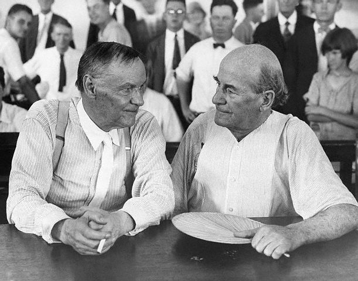

Heredarás El Viento

El diseño inteligente, es la nueva encarnación del creacionismo fundamentalista, que explica el origen de las especies de acuerdo a la interpretación literal del libro del Génesis.
Durante años en Estados Unidos los grupos fundamentalistas se han opuesto a la teoría de la evolución por considerarla falsa, y contraria a las enseñanzas de Dios. Un juez declaró que enseñar esta doctrina es ilegal en Pensylvania. Por lo menos ya hay un estado menos que seguirá con esta tonterita.
El nombre de este artículo es el mismo de una película de 1960, con Spencer Tracy. La película, a su vez, se basa en el famoso caso Scopes.
El caso Scopes es famoso porque enfrentó a dos de los más notables abogados de su tiempo. Por un lado estaba Clarence Darrow (Henry Drummond en la película), defendiendo al profesor John T. Scopes (Bertram T. Cates en la película). Acusado de enseñar la teoría de evolución el profesor Scopes enfrentaba las iras del pueblito de Dayton Tenessee, por atreverse a enseñar algo prohibido por las leyes de ese estado, en 1925. En el papel de acusador se encontraba otro brillante abogado, y ex candidato presidencial, William Jennings Bryan.
Leer sobre este jucio es realmente interesante, y por eso que encontrarán el relato de Robert Silverberg en la continuación de este artículo, pero nuevamente, les sugiero ver la película, no sólo por el tema, sino porque quizás es una de las mejores películas de todos los tiempos.
Ah, la frase viene de Proverbios 11,29: “El que perturba su casa Heredará viento, y el insensato Será esclavo del sabio de Corazón.”
UN EXTRAÑO JUICIO
EL HOMBRE ANTES DE ADÁN
ROBERT SILVERBERG
EDITORIAL DIANA S. A., MÉXICO, 1965 Trad. del inglés por RENÉ CÁRDENAS BARRIOS
Monos a juicio
Un suceso extraño, dramático y grotesco tuvo lugar en 1925 en la población de Dayton, Tennessee. Un joven maestro de escuela llamado John Thomas Scopes fue sometido a juicio por violar una ley del Estado de Tennessee. La grave ofensa que se imputaba a Scopes era enseñar la teoría de la evolución, de Darwin, a un grupo de estudiantes de escuela secundaria.
Habían pasado casi setenta años desde la publicación de El origen de las especies, de Darwin, y el descubrimiento casi simultáneo del hombre de Neanderthal. Fueron años llenos de acontecimientos para los antropólogos. Primero salió a luz el Pithecanthropus y después la mandíbula de Heidelberg, junto con muchos esqueletos de Neanderthal, e incluso los restos fosilizados del Homo sapiens primitivo. Ese mismo año, 1925, vio el descubrimiento del Australopithecus “Infante Taung”. ¿En esa fecha tan avanzada necesitaba alguien pruebas de que Darwin dijo la verdad? ¿Alguien insistía aún en que la evolución era una vil mentira?
Al parecer en Tennessee no eran suficientes setenta años de pruebas. Y así fue escenificado el extraño drama de Dayton, ante un mundo asombrado.
La mayor parte de los enemigos de Darwin habían arrojado la toalla hacía mucho tiempo. Por supuesto, hubo mucha oposición feroz inmediatamente despué s de la publicación de El origen de las especies. Un antidarwinista muy vocinglero era Samuel Wilberforce, obispo de Oxford. El obispo Wilberforce era un orador persuasivo, resbaladizo, cuyas dotes retóricas le habían valido el apodo poco halagüeño de “Sam el Jabonoso”. Cuando apareció el libro, él encabezó la oposición por su cuenta.
Se organizó un debate que se efectuaría en Oxford el 30 de junio de 1860, seis meses después de la publicación de El origen de las especies. El obispo Wilberforce iba a encabezar el ataque. Thomas Henry Huxley, el amigo de Darwin y vigoroso proponente de la teoría de la evolución, haría la defensa. El obispo Wilberforce se levantó para hablar ante una sala tensa, abarrotada, después de que oradores preliminares menos brillantes, habían aburrido al público durante algunas horas. Wilberforce desató su ofensiva de un modo jovial y confiado. “El principio de la selección natural”, dijo, “es incompatible por completo con la palabra de Dios”. Es una “visión ignominiosa de la Naturaleza”. “Contradice los relatos revelados de la Creación”. Flageló inmisercordemente las ideas de Darwin, quien no asistió por su mala salud. Por último, Wilberforce se volvió hacia Huxley y sonriendo de manera sarcástica le suplicó que le dijese “si era a través de su abuelo o de su abuela, de quien declaraba descender de un mono”.
La audiencia rió y luego estalló en aplausos, mientras Wilberforce tomaba asiento.
Huxley ofreció su defensa serena y solemnemente. Explicó las ideas de Darwin y demostró que Wilberforce no había dicho nada que las contradijera. Expuso la ignorancia científica de Sam el Jabonoso con frases firmes y severas. Entonces, por último, Huxley dijo que no estaría avergonzado en absoluto de tener a un mono por antepasado, pero sí se sentiría “avergonzado de descender de un hombre que emplea su conocimiento y su elocuencia para oscurecer la verdad”.
Wilberforce se retiró de la escena, con el ridículo que creó, vuelto contra él. No obstante, los ataques contra Darwin no terminaron allí. Un clérigo llamó al darwinismo “un intento para destronar a Dios”. Otro dijo que la obra de Darwin “hace violencia abierta a todo lo que el mismo Creador nos ha dicho en las Escrituras”. De la Iglesia episcopal de Norteamérica salió la declaración de que si la teoría de Darwin fuera cierta “la Biblia es una invención insoportable… los cristianos han sido engañados con una mentira monstruosa durante cerca de dos mil años.
En 1864, el elocuente Benjamín Disraeli, que pronto sería primer ministro, expresó su opinión, hablando de Oxford: “¿Cuál es la pregunta hecha ahora a la sociedad con una seguridad y una ligereza tan asombrosa?”, preguntó. “La pregunta es ésta… “¿Es el hombre un mono o un ángel? Señor mío, estoy de parte de los ángeles”.
Fueron palabras famosas, pero no tenían ninguna relación con el caso. La descendencia del hombre, el libro de Darwin publicado en 1871, ponía bien en claro que no había llamado al hombre mono ni descendiente de un mono. Todo lo que afirmaba era que el hombre, los monos y los cuadrumanos estaban relacionados y podían ser investigados en busca de un antepasado común. Los ataques continuaron, pero con fuerza menguante. La procesión interminable de nuevos testimonios fósiles detuvo a todos los antidarwinistas, excepto a los más fanáticos. Los clérigos comenzaron a transar con la teoría. Empezaron a expresar la creencia de que la Biblia debía ser interpretada simbólica y no literalmente. Incluso señalaron pasajes de la Biblia que podía decirse que coincidían, sin contradicciones serias, con las enseñanzas de Darwin. Andrew D. White, el primer presidente de la Universidad de Cornell, publicó en 1896 un libro célebre titulado Historia de la guerra de la ciencia contra la Teología, en el cual trazó el prolongado conflicto entre la religión dogmática y la ciencia. El doctor White revisó las objeciones a la teoría de Darwin y pudo afirmar: “Toda esta oposición puede ser considerada entre las últimas convulsiones agónicas de la vieja teoría teológica. Hasta de la nueva Universidad Católica de Washington ha venido un pronunciamiento en favor de la nueva doctrina, y en otras universidades del Viejo y Nuevo Mundo, la doctrina de la evolución por selección natural ha reclamado su derecho a una consideración completa y honesta”.
El doctor White fue demasiado optimista. No contaba con el movimiento religioso norteamericano conocido como fundamentalismo.
Los fundamentalistas creían (y aún creen) que la Biblia es la palabra literal de Dios. La Biblia dice que Dios creó el mundo en seis días; por lo tanto, así debió suceder, dicen los fundamentalistas. El fundamentalismo, como movimiento organizado, principió a tomar fuerza en los Estados Unidos inmediatamente después de la Segunda Guerra Mundial. No se confinó a un solo grupo religioso. Había adherentes al fundamentalismo entre los presbiterianos, los bautistas, los episcopales y los de otras denominaciones. Las fortalezas principales donde operaban los fundamentalistas eran las regiones rurales del Sur y del Medio Oeste.
Por supuesto, la teoría de Darwin de la evolución fue el objetivo principal de los fundamentalistas. En el decenio de 1920 establecieron organizaciones formales en veinte Estados para gestionar leyes que prohibieran la enseñanza de la evolución en las escuelas. Lograron hacer que ocho legislaturas estatales consideraran dichas normas legales. Dos Estados, Mississippi y Tennessee, llegaron a promulgar leyes que declaraban delito la enseñanza de teorías evolucionistas. Se habló de una enmienda a la Constitución de los Estados Unidos, que vetara en escala nacional el darwinismo. Un clérigo fundamentalista apellidado Stratton, llegó a decir: “Sería mejor acabar con todas las escuelas, que minar la creencia en la Biblia permitiendo la enseñanza de la evolución”.
El caudillo político del fundamentalismo era William Jennings Bryan. Nacido en 1860, Bryan había surgido a la atención pública a la edad de treinta y dos años con un discurso en que apoyaba la acuñación libre de la plata, entonces un tema político candente en los Estados Unidos. En 1896 asombró a la convención nacional demócrata de Chicago con su oratoria tonante, pronunciando un discurso ampliamente citado que contenía la frase: “¡No crucificaréis a la humanidad con una cruz de oro!” Fue nominado para la presidencia, pero lo derrotó McKinley. Volvió a ser candidato en los años de 1900 y 1908… y perdió. No fue nominado cuando los demócratas recuperaron al fin la Casa Blanca en 1912, pero el entonces presidente Woodrow Wilson lo nombró secretario de Estado.
En 1925, la carrera de Bryan en el gobierno estaba detrás de él. Ya no se preocupaba por respaldar la causa fundamentalista, y volvió sus talentos retóricos al ataque, entre otras cosas, de las teorías de Darwin y el consumo de bebidas alcohólicas. Fue Bryan quien dirigió la batalla para proscribir la evolución en las escuelas… una batalla que terminó con éxito en Tennessee.
Entonces y ahora, Tennessee ha sido la fortaleza de los fundamentalistas. Pero no todos en el Estado pensaban que la evolución era una teoría inmoral y atea. Había quienes creían que la ley que prohibía su enseñanza era injusta y merecía ser abrogada. Una buena forma de quitar de los códigos una ley absurda, es escenificar un caso de prueba en que un proceso judicial enfoque la atención pública sobre la situación.
Un joven ingeniero de minas llamado George W. Rappelyea, que era superintendente de la mina de carbón de Dayton, estaba entre los que buscaban la abrogación de la ley antievolución de Tennessee. Habló con John Thomas Scopes, de veinticuatro años, que enseñaba ciencias en la escuela secundaria de Dayton y también entrenaba el equipo de fútbol del establecimiento.
Scopes, un joven delgado, de anteojos, no sentía impaciencia por ser un cruzado. Pero convino con Rappelyea en que la ley era ridícula y se dejó empujar a violarla deliberadamente como poniendo una prueba.
Así es que Scopes habló a sus discípulos de la teoría de la evolución y Rappelyea se encargó de que fuera arrestado por violar la ley. Dayton es una población pequeña de Tennessee sudoriental, pero, en pocas horas, los periódicos de Chattanooga, a sesenta y cinco kilómetros de distancia, habían recogido la noticia de que un hombre iba a ser juzgado por violar la ley de Tennessee relativa a la evolución.
Entonces comenzaron los fuegos pirotécnicos. Toda la nación oyó la historia. Al fin habría conflicto directo entre los fundamentalistas y la ciencia moderna. Las líneas de batalla quedaron establecidas.
William Jennings Bryan se apresuró a ofrecer sus servicios a la acusación. Llegó a la pequeña Dayton el hombre que fue candidato a la presidencia tres veces, un hombre que había tenido recientemente el puesto más importante en el gabinete del gobierno de los Estados Unidos.
La defensa también tenía alta potencia. La Unión Norteamericana de Libertades Civiles apremió a los hombres liberales a unirse detrás de Scopes, y Clarence Darrow, quizá el jurisconsulto más famoso de los Estados Unidos, solicitó defender a Scopes por su cuenta. Fueron con él a Dayton, Dudley Field Malone, otro bien conocido abogado y distinguido católico seglar, y Bainbridge, un jurisconsulto que también fue secretario de Estado, como Bryan.
Darrow, a los sesenta y ocho años, era tres años más viejo que su adversario, Bryan. Había figurado en muchos juicios importantes relacionados con los sindicatos obreros y se había ganado una reputación como defensor de causas impopulares. Un año antes, tomó parte en el caso de asesinato Leopold-Loeb, en Chicago. Vio en el caso de Scopes una oportunidad para vengarse del antiintelectualismo de “Nada sabe”, que tanto estaba afligiendo a los Estados Unidos en esa época.
Los abogados de la defensa reunieron un grupo formidable de testigos expertos, que declararían respecto al valor de la teoría de la evolución. Todos fueron a Dayton pagándose sus propios gastos. El grupo incluía a W. C. Curtis, profesor de zoología en la Universidad de Missouri; al rabí Herman Rosenwaser, de San Francisco, un erudito en la Biblia; a Wilbur Nelson, geólogo del Estado de Tennessee; a Kirtley Mather, profesor de geología en la Universidad de Harvard; a Maynard Metcalf, profesor de zoología en la Universidad John Hopkins; y a varios otros.
El juicio estaba señalado para abrirse el viernes 10 de julio. Sin embargo, mucho tiempo antes de eso, la pequeña Dayton tomó una atmósfera de circo. Periodistas, hombres de ciencia, abogados, docenas de desconocidos, llegaron a la población. La atención del mundo estaba fija en Dayton. En Europa, donde la evolución había sido aceptada durante una generación, hubo sonrisas burlonas ante el pensamiento de que los incivilizados estadounidenses tuvieran que luchar en los tribunales por una cosa así.
El pueblo de Dayton era cualquier cosa menos imparcial. El populacho, fundamentalista en su mayor parte, se encontraba en pleno a favor de la ley y de William Jennings Bryan. Darrow y sus abogados “tramposos de la ciudad” obtuvieron una recepción fría. Nadie quería darles hospedaje, y los defensores se vieron obligados a alojarse en una “casa embrujada” abandonada, en una colina que dominaba al pueblo. Scopes en persona saludó a sus distinguidos abogados cordialmente, pero parecía aturdido y asombrado por su elevación repentina a la fama internacional.
El primer día del juicio transcurrió sin sucesos. Se escogió un jurado. Darrow no objetó a ninguno de los miembros, que eran todos hombres de la localidad. Pero señaló que once de los doce eran fundamentalistas. No había expertos en las enseñanzas de Darwin. Uno de ellos ni siquiera sabía leer ni escribir. Otro dijo que el único Darwin de quien sabía “tenía una tienda local de novedades”. Darrow no esperaba que el jurado les mostrara simpatía.
Después de elegido el jurado, el juicio entró en receso por el fin de semana. El domingo, el reverendo Howard Byrd, de la rama Norte de la Iglesia metodista, i nvitó a Charles Francis Potter, ministro liberal unitario que estaba en el pueblo con motivo del juicio, a tomar parte en los servicios. Pero se sabía que Potter era partidario de la evolución. La congregación del reverendo Byrd impidió el acceso al púlpito a Potter y después obligó al mismo Byrd a que renunciara.
Mientras el furioso rebaño de Howard Byrd estaba obstruyendo el paso a Charles Potter, William Jennings Bryan hablaba ante una multitud entusiasta en la cercana iglesia metodista meridional. Luego, esa tarde, todo Dayton se reunió en el centro del pueblo para oír hablar otra vez al famoso orador. Bryan dijo que se alegraba de tener la oportunidad de sacar, “esta cosa repugnante, la evolución, fuera de la oscuridad… Ahora se enfrentarían al fin en un duelo a muerte los hechos de la religión y la evolución”.
El duelo principió seriamente el lunes. Después de que un clérigo local dirigió una plegaria inicial, que fue en realidad una petición al jurado de que hallara culpable a Scopes, los abogados de la defensa pidieron que fuera retirada la acusación. Argumentaron que la Suprema Corte de los Estados Unidos había dictaminado: “La ley no sabe de herejías y no está comprometida al apoyo de ningún dogma ni al establecimiento de ninguna secta”. En otras palabras, la ley antievolucionista de Tennessee era anticonstitucional. Los abogados de la defensa declararon también que presentarían testigos expertos para demostrar que no había necesariamente conflicto entre el cristianismo y la evolución.
Darrow dijo al juez presidente, John T. Raulston, que “Los fuegos del fanatismo y del odio están siendo encendidos. Éste es un intento atrevido para destruir la ciencia, como nunca se hizo en la Edad Media”. Señaló que la ley de Tennessee prohibía enseñar cualquier cosa que se opusiera a la Biblia. Pero había más de quinientas iglesias y sectas diferentes en los Estados Unidos, cada uno con su propia interpretación de las Escrituras. ¿Quién iba a decir qué secta estaba más cerca de la verdad?
Dijo Darrow: “Mi cliente está aquí porque campean la ignorancia y el fanatismo, y esa es una combinación poderosamente fuerte… Si hoy puede su señoría declarar crimen la enseñanza de la evolución en las escuelas públicas, mañana puede ser crimen enseñarla en las escuelas privadas. En la siguiente sesión de la legislatura pueden prohibir los libros y los periódicos. Puede poner a católico contra protestante y protestante contra protestante cuando intenta introducir su propia religión en las mentes de los hombres. Si es capaz de hacer una cosa, es capaz de hacer la otra. Después de algún tiempo, señor presidente, nos encontraremos retrocediendo hasta los días gloriosos del siglo XVI,cuando los fanáticos encendían los haces de leña para quemar a los hombres que se atrevían a llevar algún conocimiento e ilustración a la mente humana”.
El juez Raulston declaró el juicio en receso hasta el miércoles, para considerar la moción de rechazar la acusación. Esa noche, cuando los abogados de la defensa se reunieron en la “casa embrujada” para planear su estrategia futura, estalló una tormenta eléctrica feroz. Darrow expresó, sonriendo, la esperanza de que no tocara un rayo la casa de los defensores. ¡Una demostración tan directa de la cólera de Dios, con seguridad tendría que dar el triunfo a los fundamentalistas!
Cuando el juicio se reanudó el miércoles, el juez Raulston dictaminó en contra de la defensa. La acusación subsistiría. La ley de Tennessee no era anticonstitucional porque no privaba a nadie del derecho de palabra o pensamiento libres. Por supuesto, Scopes tenía libertad para enseñar en algún otro Estado. Ciertamente, dijo el juez, el Estado de Tennessee tenía el derecho de controlar lo que enseñaba en sus escuelas públicas.
Entonces, la acusación llamó a siete estudiantes, al superintendente de escuelas del condado y a los jefes de consejos de la escuela. Ellos atestiguaron que, en efecto, Scopes había enseñado darwinismo en su salón de clases. Darrow no hizo repreguntas. Únicamente señaló que el mismo Estado proporcionó el libro de texto que utilizó Scopes en su lección “ilegal”.
Darrow comenzó a llamar a sus expertos científicos. Se le tomó juramento a Maynard Metcalf, de John Hopkins. Pero cuando Darrow principió a interrogar al zoólogo respecto a la evolución, la acusación se opuso. El caso a discusión era simplemente: ¿violó la ley Scopes? Las verdades o falsedades de la evolución no tenían ninguna relación con el caso.
Eso llevó al juicio a otra detención. El juez dijo que el jueves oiría los argumentos respecto a si debía incluir o no pruebas científicas.
Al día siguiente, William Jennings Bryan apremió para que los expertos fueran excluidos. Los jurados, dijo, no necesitaban la ayuda de profesores de colegio para decidir sobre los hechos. “No se necesita ser un experto para saber lo que dice la Biblia… ¡No es necesario el testimonio de expertos!
En concreto, Bryan, que había hablado el domingo de un “duelo a muerte” entre la evolución y la religión, estaba desdiciéndose. No quería discutir el tema de la verdad de la evolución. Aun los fundamentalistas de Dayton se sintieron decepcionados. Pensaron que Bryan mostró debilidad al negarse a discutir con los profesores de Darrow. El abogado de la defensa, Dudley Field Malone, amontonó al desprecio sobre Bryan. “Nunca he visto mayor necesidad de aprender”, dijo, “que la exhibida por la acusación, que rechaza la información ofrecida por testigos expertos… ¿Por qué este miedo de enfrentarse a este expediente? El señor Bryan ha dicho que éste va a ser un duelo a muerte. Sé poco de duelos, señor presidente, pero, ¿significa esto que nuestra única arma, los testigos, va a sernos quitada, mientras solamente la acusación lleva la espada?”
La sala del tribunal se estremeció de risa. Malone prosiguió: “No tememos toda la verdad que puedan presentar con hechos. Estamos dispuestos. Estamos con el progreso. Estamos con la ciencia. Estamos con la inteligencia. Sentimos que estamos con las libertades fundamentales de Norteamérica. No tememos al temor. Lo desafiamos”. Y apuntó con el índice hacia Bryan, calvo y sudoroso: “¡Allí está el temor!”, exclamó.
Las ovaciones resonaron en la abarrotada sala de la corte rural. El orden no pudo ser restablecido durante un cuarto de hora, mientras el público se mofaba de Bryan y aplaudía a Malone.
A pesar del momento de triunfo de Malone, el juez Raulston dictaminó otra vez contra la defensa. Darrow no podía introducir el testimonio de los expertos. Entonces, Darrow declaró que haría tomar el testimonio por una taquígrafa y, de todos modos, lo pasaría a la prensa, para que el punto de vista evolucionista llegara al público, a pesar del dictamen del juez.
“Espero, coronel Darrow, que no intente reprobar el tribunal”, respondió el juez Raulston. Darrow contestó sarcásticamente: “Su Señoría tiene derecho a la esperanza”. ¡Bang! -sonó el mazo. El encolerizado Raulston ordenó un receso hasta el lunes:
Cuando se reanudó el juicio, Darrow se disculpó por su sarcasmo. Pero había dejado sentada su tesis: Bryan y los otros abogados de la acusación temían claramente luchar sobre bases de prueba científica. Otro abogado de la defensa, Arthur Garfield Hays, hizo leer el testimonio de expertos para el expediente del tribunal, para sentar las bases de una apelación a un tribunal más alto. También leyó pasajes de varias traducciones de la Biblia, para demostrar que había muchas versiones diferentes de las mismas Escrituras. Por último, sorprendió a todo el mundo al anunciar que la defensa llamaba a Bryan a declarar como “testigo bíblico”.
Darrow lo interrogó. El en un tiempo candidato presidencial hizo una declaración de creencias religiosas. Sí, dijo Bryan, Adán fue el primer hombre y Eva su esposa, creada de su costilla. La historia de la serpiente en el Paraíso era literalmente cierta. También lo era la historia de Noé. Toda palabra de la Biblia era un antecedente histórico preciso. Lo que estaba haciendo Darrow era una exposición deliberada del ingenuo punto de vista de los fundamentalistas. Otros miembros de la acusación intentaron interrumpir el embarazoso interrogatorio, pero Bryan insistió en continuar, declarando: “No, que siga. No temo defender mi religión”.
La causa principal del juicio aún estaba sin establecerse. El martes, el juez Raulston declaró que el testimonio de Bryan no venía al caso y redujo el proceso a un punto único: ¿había o no enseñado Scopes la evolución?
La defensa nunca negó que lo hubiera hecho. Darrow se levantó y dijo: “Estamos perdiendo el tiempo. Debe llamar al jurado y pedirle que rinda un veredicto de culpabilidad”.
Fue un final anticipado, Scopes fue declarado culpable rápidamente y multado con cien dólares. La causa pasó en apelación a la Suprema Corte de Tennessee, y el mismo Scopes, ahora una celebridad, se inscribió como estudiante graduado de geología en la Universidad de Chicago. Darrow volvió a su práctica legar regular. Bryan, agotado por el esfuerzo y la humillación que impuso el juicio sobre su persona, murió en Dayton el 25 de julio, cinco días después de que Scopes fue declarado culpable.
En enero de 1927, la Suprema Corte de Tennessee dio su dictamen. En una decisión dividida, se negó a abrogar la ley anticonstitucional. Pero denegó por un tecnicismo la decisión del juez Raulston respecto a la multa de cien dólares y pidió al procurador del Estado que dejara las cosas hasta ahí. “No vemos nada que ganar”, dijo la Suprema Corte del Estado, “prolongando la vida de este caso caprichoso”.
Aunque terminó, en cierto modo, con una victoria para los fundamentalistas, el “Juicio de los Monos” de Scopes no solamente acabó con William Jennings Bryan, sino también con la última oposición seria a la teoría de la evolución. La idea fundamentalista había sido sometida al ridículo mundial. No hubo más persecuciones en Tennessee por enseñar las teorías de Charles Darwin.
Todavía hay en las zonas rurales de los Estados Unidos muchos fundamentalistas que se niegan a aceptar la teoría de la evolución. Pero desde el juicio a Scopes han quedado en una minoría menguante, cuyos gritos no son escuchados. Darwin ha triunfado, apoyado por el caudal de pruebas fósiles… el “testimonio de la pala”, para aprovechar la frase afortunada del arqueólogo Geoffrey Bibby.
Hay una especie de epílogo para la historia del juicio de Scopes. En 1959 apareció un libro titulado Evolución y pensamiento cristiano en nuestros días editado por Russell L. Mixter, profesor de zoología en el Colegio Wheaton, en Illinois. El libro es una recopilación de ensayos de hombres de ciencia que se consideran “cristianos conservadores”. Uno de ellos fue George K. Schweitzer, profesor asociado de química en la Universidad de Tennessee.
En su ensayo, el doctor Schweitzer escribió que la historia bíblica de la creación tenía por objeto decirnos quién creó el universo, no cómo fue creado. La investigación moderna, decía, ha demostrado que los primeros capítulos del Génesis deben ser interpretados “poética o alegóricamente”, no en forma literal.
Nadie en Tennessee pidió el arresto del doctor Schweitzer.